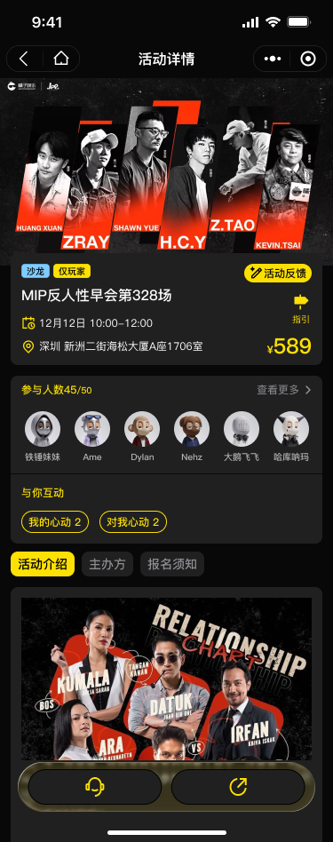
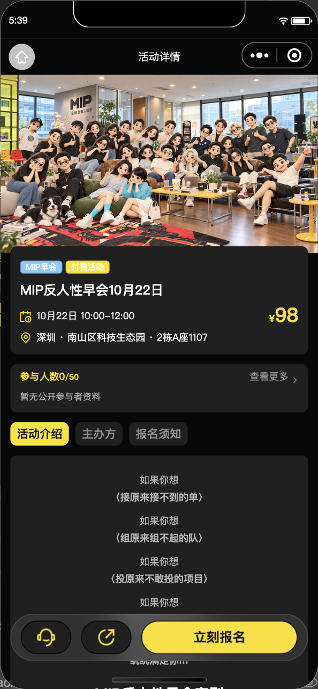

2026-10-20 用户反馈补充，同一未定稿报告继续更新。当前权威来源为 MIP Figma 文件 qqkbdlh4c4Swubum8S3F2f，本次已实时读取活动页与具体画框。
| 原图 | 固定底栏 | 取消报名 |
|---|---|---|
| 3319:5944 未签到详情 | 客服、分享、立刻报名 | 没有定义该入口 |
| 1818:17142 已签到详情 | 客服、分享 | 没有定义该入口 |
不能由这两张稿推导“取消必须放在长内容末尾”。原来的页尾入口是实现补充。用户本轮已确认：允许取消时加入固定底栏，保留二次确认；继续退款也使用同一位置。原型未覆盖的状态按这条新确认执行。

生产环境包 1.0.5 已经微信CLI上传成功；主包1,764,413字节。运行代码 e0f5bf2feef5169709804df2e2fadbe225c96a2c 已推送main。完整verify:all通过：小程序1833、后台接口331、后台界面258。公众平台仍需确认/设为体验版，上传不等于体验版切换或正式发布。
| 问题 | 修改前 | 修改后 |
|---|---|---|
| 取消报名难找 | 入口在图文、视频等内容之后，必须滑到底。 | 服务端 canCancel 为真时，客服和分享右侧显示固定的“取消报名”；canRetryRefund 为真时显示“继续处理退款”。保留原有二次确认、版本校验、防重复操作和服务端取消逻辑。 |
| 已签到等状态 | 固定栏仅客服和分享。 | 服务端不允许取消/继续退款且不可报名时仍保留两按钮，不按前端身份或日期计算资格。 |
| 查看更多箭头偏小、偏下 | 使用裁切过的旧图标，8px 尺寸，组件带文字基线偏移。 | 使用原稿3319:5996的完整16×16 SVG，按稿旋转-90°；图片作为block元素与18px文字行垂直居中，间距2px。 |
本批只移动用户端入口与修正图标。后台取消/退款配置、平台中立契约和服务端状态机已联动排查，原有规则不需要随布局改变。
左：修改前生产早会，右：修改后TEST免费活动；均为390×844逻辑视口，数据和封面不同，仅比较箭头与文字的对齐。原型为375×948参考画框，不作像素一致声明。生产复拍出现画面与页面数据不一致，完整编译后仍不可靠，已撤回这些截图，生产视觉复核待真机。

已用真实TEST免费报名验证固定取消入口：报名版本1，取消后重新离开并新开页面回读为CANCELLED、版本2。固定栏内按钮位置与原生确认弹窗均已实拍，原始截图含TEST账号头像和昵称，仅保存在本机，不对外发布。TEST文字和箭头中心实测偏差0px，箭头16×16px。
真实原生确认弹窗已实拍；开发工具的原生弹窗自动点击未能关闭对话框。弹窗选择分支采用受控测试响应，业务报名和取消仍为真实TEST服务端请求。iPhone点击、真实付费退款待验收，不以自动化响应冒充真机通过。